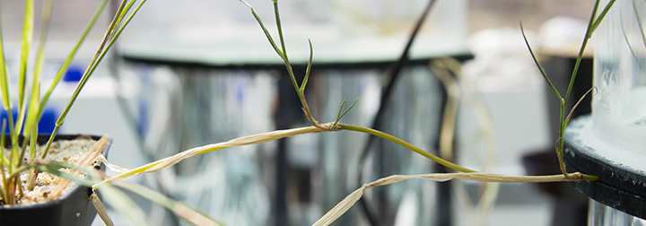
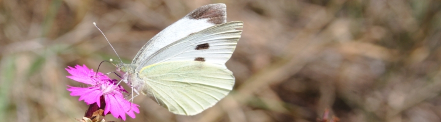
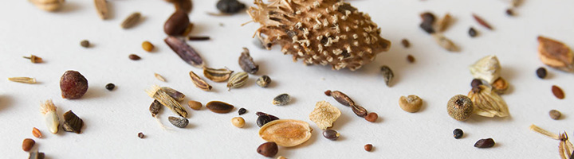
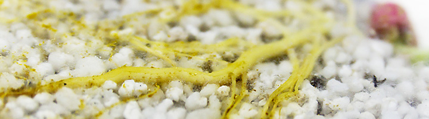
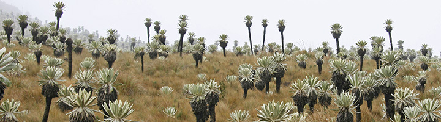
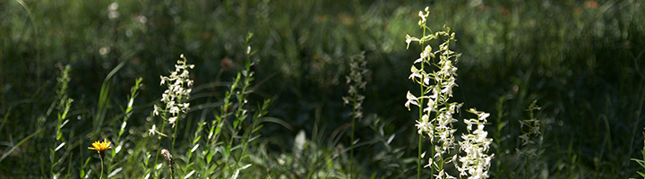
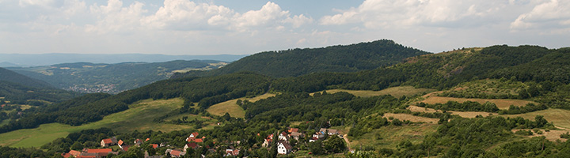

dynamika rostlinných populací, role jednotlivých složek jejich životního cyklu
srovnávací demografie rostlin, jaké jsou klíčové trade-off životních strategií rostlin, jaké charakteristiky své životní strategie mohou rostliny v evoluci měnit snáze a jaké hůře
populační biologie invazních rostlin: hledání slabých míst v jejich životním cyklu pro jejich cílený management
šíření rostlin v krajině a metapopulační dynamika, jak se rostliny vyrovnávají s měnící se krajinou, význam změn krajiny pro rozšíření druhů i celých společenstev, krajinná dynamika druhů v systému fragmentovaných populací suchých trávníků. Význam dálkového šíření semen pro krajinou dynamiku druhů
populační modely klonálních rostlin: jak se vyrovnat s tím, že rostliny nemají jasně definované jedince, takže naše "živočišná" zkušenost nám nepomáhá
Populační dynamika cytotypově smíšených populací
populační biologie rostlin napadených systemickými patogeny – jaký vliv má patogen na rostlinu na populační úrovni?
Aktuální náměty možných prací bakalářských/diplomových/disertačních prací: viz SIS
Kontakt: Zuzana Münzbergová, Zdeněk Janovský, Tomáš Dostálek, Tomáš Koubek
Interakce rostlin s herbivory (velkými a malými, domestikovanými i volně žijícími)
Jak velcí herbivoři ovlivňují vegetaci na krajinné škále? Dokážou volně žijící herbivoři udržet krajinu otevřenou?
Jak ovlivňují vegetaci na úrovni společenstev? Jaký vliv má jejich pohyb na vegetaci v okolí cestiček? Dokáží obohatit louku přinesením semen druhů z okolí?
Jak jedinci rostlin reagují na okus (ať už simulovaný či reálný)?
Využití velkých herbivorů při plánování managementu chráněných území
jak hmyzí herbivoři (zejména predátoři semen) ovlivňují populační dynamiku rostlin
Aktuální náměty možných prací bakalářských/diplomových/disertačních prací: viz SIS
Kontakt: Barbora Lepková, Eva Horčičková (velcí herbivoři), Zdeněk Janovský, Zuzana Münzbergová, Tomáš Dostálek (malí herbivoři)
Klonální rostliny

vegetativní/klonální růst jako klíčový (ale opomíjený) životní projev většiny rostlin, jeho možnosti a vztah k prostředí
klonální růst jako způsob přesného umisťování potomstva a pohybu rostlin v prostředí vůbec
klonální potomstvo jako pojistka pro případ poškození: jak se liší klonální rostliny od neklonálních v reakci na disturbanci (třeba mechanickou)
mateřská investice u klonálních rostlin: jak je silná, jak dlouho trvá a k čemu vlastně je (použití stabilních izotopů i ekologických pokusů)
Aktuální náměty možných prací bakalářských/diplomových/disertačních prací: viz SIS
Kontakt: Jitka Klimešová, Jana Duchoslavová, Tomáš Herben, Martin Weiser, Tomáš Koubek
"Chování" rostlin a experimentální ekologie
chování rostlin a fenotypická plasticita: jak rostliny reagují na své sousedy, na herbivory a vůbec na měnící se okolní prostředí. Dohody, klamy, hrozby, ústupky, agrese a smír v podání rostlin.
vzájemné vztahy rostlinných jedinců v porostech: jak reakce na sousedy určuje vlastnosti celého porostu
je fenotypická plasticita v pozadí toho, jak jsou rostliny běžné/vzácné?
jak se rostliny starají o potomstvo – jak podstrojují klonálním potomkům a do jaké míry je používají jen jako rozšířené orgány pro získávání zdrojů pro sebe?
Aktuální náměty možných prací bakalářských/diplomových/disertačních prací: viz SIS
Kontakt: Martin Weiser, Jana Duchoslavová, Tomáš Herben, Tereza Mašková, Tomáš Koubek
Ekologie opylovačů a opylovaní rostlin

jak souvisí vlastnosti květů rostliny se spektrem jejích opylovačů (jeho generalisovaností/specialisovaností), a úspěšností přenosu pylu na jedince stejného druhu
roznášejí pyl motýli jinak než pestřenky a ty jinak než včely? Srovnání hlavních skupin opylovačů v chování a v úspěšnosti přenosu pylu
jak prostorové uspořádání rostlin v populaci a souběžně kvetoucí druhy ovlivňují prostorové chování opylovačů, kradou si rostliny navzájem opylovače, nebo si naopak pomáhají obecným zvýšením atraktivity lokálního porostu
jak houbové patogeny manipulují růst a fenologii rostliny a jejich opylovače, a jak jim tyto schopnosti umožňují se šířit
jak se rostliny vyhýbají samoopylení – co když můj nejbližší soused je geneticky identický, protože to je potomek vegetativního růstu
Aktuální náměty možných prací bakalářských/diplomových/disertačních prací: viz SIS
Kontakt: Zdeněk Janovský, Tomáš Koubek, Klára Koupilová
Ekologie semen (jak se rostliny starají o potomstvo)

kolik živin (a jakých – uhlík nebo dusík/fosfor) připravují potomkům rostliny v semenech, jak to závisí na podmínkách prostředí, kde (asi) semeno bude klíčit?
jak umožňují potomkům efektivní přesun dál od mateřské rostliny a co to ovlivňuje?
vliv souseda aneb vím, kdo vedle mě roste? Změny v klíčení a růstu pod vlivem různých sousedských druhů.
jak rostliny různých stanovišť optimalizují rychlost klíčení a dormanci semen?
Aktuální náměty možných prací bakalářských/diplomových/disertačních prací: viz SIS
Kontakt: Tereza Mašková, Barbora Lepková, Andrea Veselá, Martin Weiser
Ekologie podzemních orgánů rostlin

jak reagují kořeny v terénu (třeba v zapojené louce) na své sousedy a na dostupnost minerálií. Pomůžou nám znalosti z květináčových pokusů k porozumění tohoto složitého světa venku?
použití molekulárních technik (zejména kvantitativní PCR) pro určení přítomnosti a kvantity kořenů jednotlivých druhů v terénu (protože kořeny pod zemí se nedají jinak rozlišit do druhů)
kořeny a oddenky jako zásobárna živin přes zimu i jako zásobárna pupenů pro rychlý růst na jaře: jak se tím liší jednotlivé rostlinné druhy?
růst kořenů v čase a prostoru, soužití a vzájemná zastupitelnost kořenů a mykorhizních hub
Aktuální náměty možných prací bakalářských/diplomových/disertačních prací: viz SIS
Kontakt: Martin Weiser, Tomáš Herben, Jitka Klimešová, Pavlína Knobová
Zpětná vazba mezi rostlinou a půdou (plant-soil feedback, PSF)
kořeny rostlin mění půdu, v níž rostou, ať už chemicky (změny dostupnosti minerálií, kořenové exudáty), tak i biologicky (růst patogenů a symbiontů). Naším cílem je zjistit, jakou roli tento jev má v přírodě – pro vzájemné vztahy rostlin (kompetici, mutualismus) a jejich úspěšnost v přírodě
jak roli má tento plant-soil feedback pro rostlinné invaze. Jsou úspěšné invazní druhy schopny jej používat pro vlastní růst a potlačení konkurentů? Význam biotické a abiotické složky půdy pro predikci invazivnosti druhů. Význam půdních hub pro intenzitu vnitrodruhové zpětné vazby u invazních druhů.
jak rozlišit jednotlivé složky plant-soil feedbacku (anorganické, organické složky, symbionti a patogeny) pomocí molekulárních a analytických technik
jakou roli má tento plant-soil feedback v dynamice rostlinných společenstev. Zpětná vazba mezi rostlinou a půdou jako klíčový faktor v primární sukcesi na antropogenních substrátech.
lze využít druhových vlastností pro predikci typu a intenzity plant-soil feedbacku. Rychlost dekompozice, produkce kořenových exudátů a struktura kořenového systému jako prediktory interakce rostlin a půdy.
Aktuální náměty možných prací bakalářských/diplomových/disertačních prací: viz SIS
Kontakt: Zuzana Münzbergová, Anna Aldorfová, Eliška Kuťáková, Tomáš Herben
Eko(fyzio)logie horských rostlin v tropech i temperátu

fyziologická ekologie horských tropických rostlin, adaptace na teplotní extrémy, mechanismy odolnosti vůči mrazu
vliv sezónnosti klimatu na vývoj adaptací a funkčních vlastností rostlin, vztah k rozšíření druhů a celých skupin/linií
Aktuální náměty možných prací bakalářských/diplomových/disertačních prací: viz SIS
Kontakt: Petr Sklenář
Adaptace rostlin ke změnám klimatu
Genetická a epigenetická diferenciace a plasticita v reakci rostlin na měnící se klima
Klíčení jako významný faktor podmiňující možnost druhů se adaptovat na nové podmínky
Možnosti rychlé adaptace druhů na měnící se klima – experimentální evoluce
Jak se mění vztahy rostlin a dalších organismů (herbivoři, mykorhizy...) s měnícím se klimatem, a co to může znamenat pro schopnost rostlin se změnám klimatu přizpůsobit
Aktuální náměty možných prací bakalářských/diplomových/disertačních prací: viz SIS
Kontakt: Zuzana Münzbergová, Tomáš Dostálek, Andrea Veselá
Evoluce růstových forem a diversifikace, evoluce bylinnosti
ekologie jihoamerických páramos, příčiny jejich biodiverzity, evoluce a fylogeneze modelových skupin v podmínkách vysokých hor s ostrými gradienty a migračními bariérami
jaké faktory podmiňovaly vznik bylin ze dřevin: fylogenetická analýza i srovnávací experimenty
čím se funkčně liší byliny od dřevin - některé věci jsou zřejmé (výška, přezimování), ale mnohé jsou stále neznámé (odolnost proti disturbanci v mládí, schopnost plastické reakce, fenologie)
Aktuální náměty možných prací bakalářských/diplomových/disertačních prací: viz SIS
Kontakt: Petr Sklenář, Adam Klimeš, Tomáš Herben
Ochranářská biologie

management přírodovědecky cenných území (kosení, pastva a i poněkud drsnější techniky) a jeho vliv na biodiverzitu, návrhy managementových opatření v chráněných územích, možnosti obnovy stanovišť suchých trávníků v CHKO Český Kras
cílená ochrana vzácných druhů (o většině z nich nevíme téměř nic): znalost jejich populační biologie a genetiky jako předpoklad pro úspěšnou ochranu, příprava záchranných programů druhů
genetická diversita a fitness vzácných a ohrožených druhů rostlin, genový tok mezi populacemi a nebezpečí inbrední a outbrední deprese
kolonizace nových stanovišť (bývalé lomy, opuštěná pole) vzácnými a ohroženými druhů rostlin
biologické podklady pro ochranu vzácných druhů pomocí ex-situ populací (botanické zahrady, zahrádkáři)
endemický druh kuřička Smejkalova (Minuartia smejkalii; na hadcích u Želivky) jako vlajkový druh: Význam inbrední a outbrední deprese pro přežití jejích populací, faktory určující dynamiku jejích populací, projekty na posílení jejích populací, ex-situ ochrana
Aktuální náměty možných prací bakalářských/diplomových/disertačních prací: viz SIS
Kontakt: Zuzana Münzbergová, Jana Knappová, Zdeněk Janovský, Tomáš Dostálek
Historie a dynamika vegetace a krajiny

sukcese vegetace a uchycování druhů přirozených stanovišť na nově vzniklých stanovištích (bývalé lomy, pískovny, pole, říční náplavy)
změna druhové skladby vegetace v průběhu posledních desítek let - srovnání starých a recentních vegetačních záznamů (např. České Středohoří, Křivoklátské pleše, ...)
vztah dnešní vegetace k struktuře krajiny v minulosti, vliv hospodaření dnes a v minulosti - využití paleoekologických dat, starých leteckých snímků, historických map, archivních záznamů, vzájemné působení současné a historických faktorů pro složení vegetace (např. suchých trávníků)
vegetace a její dynamika na postindustriálních a postsídelních stanovištích
vegetačně fytocenologické studie, změny vegetace na širších stanovištních gradientech
funkční vlastnosti druhů jako určující faktor úspěchu druhů v minulosti – a co z toho poznáme v dnešní krajině?
Aktuální náměty možných prací bakalářských/diplomových/disertačních prací: viz SIS
Kontakt: Jan Novák, Adéla Pokorná, Zuzana Münzbergová
Rostliny a člověk ve víru staletí
Jak migrovaly druhy v souvislosti s pravěkými kulturami a co můžeme říct o jejich invazivitě? Domestikace druhů jako evoluční proces.
Kde leží počátek antropocénu?
Archeobotanika: využití nálezů rostlinných zbytků z archeologických kontextů (makrozbytky, uhlíky, fytolity, pyl), jejich botanická identifikace a interpretace ve spolupráci s archeology (práce v terénu i u mikroskopu).
Aktuální náměty možných prací bakalářských/diplomových/disertačních prací: viz SIS
Kontakt: Adéla Pokorná, Jan Novák
Fungování ekosystémů s globální změnou
Experimentální paleoekologie – jak se mění např. velikost a tvar buněk (fytolity) nebo produkce pylu v závislosti na změnách prostředí. Jak můžeme tyto informace využít pro rekonstrukci minulosti?
Jak ovlivňují změny klimatu fungování společenstev, např. jejich disturbanční režim, a biodiverzitu. Jaké změny můžeme predikovat v budoucnu?
Jak probíhají invaze (migrace) a lokální extinkce na dlouhých časových škálách?
Měření v terénu, práce s velkým množstvím dat, využití analýz rostlinných zbytků (pyl, makrozbytky, uhlíky) ale i dat z příbuzných oborů (geochemie, letokruhy, biomarkery, DNA), modelování.
Aktuální náměty možných prací bakalářských/diplomových/disertačních prací: viz SIS
Kontakt: Petr Kuneš, Vojtěch Abraham, Alice Moravcová, Kristýna Hošková
Struktura a historie krajiny na škále od lokality po kontinent
Změna společenstev a jejich složení v čase v důsledku velkých činitelů jako je klima
Jaké ekosystémy a druhy jsou v přírodě původní a co je přirozené? Co má hodnotu k ochraně?
Původ a historie nelesních biotopů ve středoevropské krajině, vliv land-use.
Terénní práce při vyhledávání a odběru sedimentárních záznamů, důraz na znalost (interdisciplinární) krajiny, využití analýz pylu, makrozbytků, uhlíků, mikroskopování a interpretace získaných výsledků.
Aktuální náměty možných prací bakalářských/diplomových/disertačních prací: viz SIS
Kontakt: Vojtěch Abraham, Jan Novák, Petr Kuneš, Adéla Pokorná